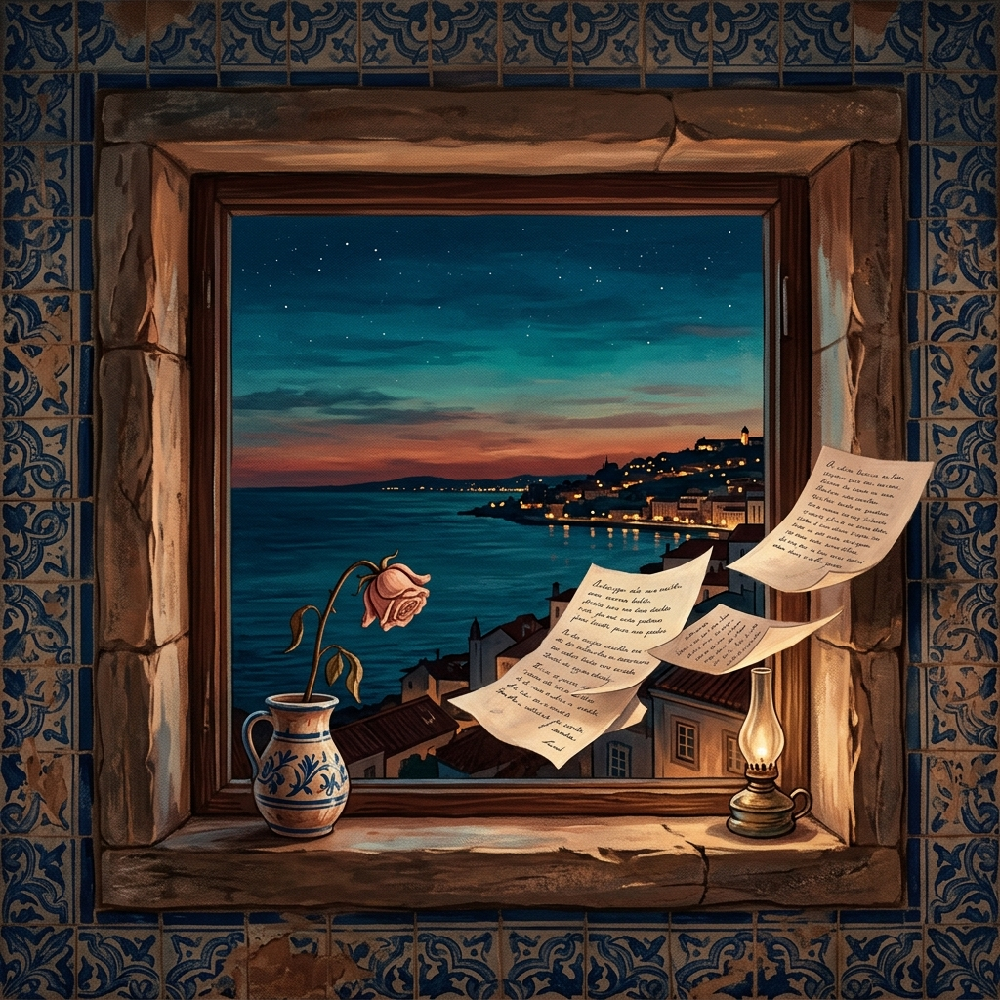

Amor de Poesía Love of Poetry Amore di Poesia 诗之爱 حب الشعر Любовь к Поэзии Любов до Поезії Liebe zur Poesie Amour de Poésie 詩の愛 Amor de Poesia
Me dices adiós de forma suave,
Adiós, amor de poesía. You say goodbye to me softly,
Goodbye, love of poetry. Mi dici addio dolcemente,
Addio, amore di poesia. 你轻声对我说再见，
再见，诗之爱。 تقولين لي وداعاً برقة،
وداعاً، حُبَّ الشعر. Ты тихо говоришь мне «прощай»,
Прощай, любовь поэзии. Ти кажеш мені «прощавай» лагідно,
Прощавай, любов поезії. Du sagst mir sanft auf Wiedersehen,
Leb wohl, Liebe der Poesie. Tu me dis adieu doucement,
Adieu, amour de poésie. あなたは静かにさよならを告げる、
さよなら、詩の愛。 Dizes-me adeus suavemente,
Adeus, amor de poesia.
Adiós, amor de poesía. You say goodbye to me softly,
Goodbye, love of poetry. Mi dici addio dolcemente,
Addio, amore di poesia. 你轻声对我说再见，
再见，诗之爱。 تقولين لي وداعاً برقة،
وداعاً، حُبَّ الشعر. Ты тихо говоришь мне «прощай»,
Прощай, любовь поэзии. Ти кажеш мені «прощавай» лагідно,
Прощавай, любов поезії. Du sagst mir sanft auf Wiedersehen,
Leb wohl, Liebe der Poesie. Tu me dis adieu doucement,
Adieu, amour de poésie. あなたは静かにさよならを告げる、
さよなら、詩の愛。 Dizes-me adeus suavemente,
Adeus, amor de poesia.
Acercas de forma lenta tu lejanía,
mas que te deje, temes la alegría,
languidece el amor de poesía. Slowly you bring your distance near,
yet more than leaving, you fear the joy,
the love of poetry languishes. Avvicini lentamente la tua lontananza,
ma più che lasciarti, temi la gioia,
languisce l'amore di poesia. 你缓缓拉近你的遥远，
比起离别，你更惧怕欢愉，
诗的爱在凋零。 تُقرِّبين بُعدكِ ببطء،
لكنكِ تخشين الفرح أكثر من الرحيل،
يذبل حُبُّ الشعر. Ты медленно приближаешь свою даль,
но больше, чем уйти, ты боишься радости,
томится любовь поэзии. Ти повільно наближаєш свою далечінь,
але більше, ніж піти, ти боїшся радості,
в'яне любов поезії. Langsam bringst du deine Ferne nah,
doch mehr als zu gehen, fürchtest du die Freude,
es welkt die Liebe zur Poesie. Tu rapproches lentement ton éloignement,
mais plus que de partir, tu crains la joie,
languit l'amour de poésie. あなたはゆっくりと遠ざかりを近づける、
去ることよりも、喜びを恐れて、
詩の愛は衰えゆく。 Aproximas lentamente a tua distância,
mas mais que partir, temes a alegria,
languidece o amor de poesia.
mas que te deje, temes la alegría,
languidece el amor de poesía. Slowly you bring your distance near,
yet more than leaving, you fear the joy,
the love of poetry languishes. Avvicini lentamente la tua lontananza,
ma più che lasciarti, temi la gioia,
languisce l'amore di poesia. 你缓缓拉近你的遥远，
比起离别，你更惧怕欢愉，
诗的爱在凋零。 تُقرِّبين بُعدكِ ببطء،
لكنكِ تخشين الفرح أكثر من الرحيل،
يذبل حُبُّ الشعر. Ты медленно приближаешь свою даль,
но больше, чем уйти, ты боишься радости,
томится любовь поэзии. Ти повільно наближаєш свою далечінь,
але більше, ніж піти, ти боїшся радості,
в'яне любов поезії. Langsam bringst du deine Ferne nah,
doch mehr als zu gehen, fürchtest du die Freude,
es welkt die Liebe zur Poesie. Tu rapproches lentement ton éloignement,
mais plus que de partir, tu crains la joie,
languit l'amour de poésie. あなたはゆっくりと遠ざかりを近づける、
去ることよりも、喜びを恐れて、
詩の愛は衰えゆく。 Aproximas lentamente a tua distância,
mas mais que partir, temes a alegria,
languidece o amor de poesia.
Por temor a su felicidad,
felicidad de difícil eternidad. For fear of its happiness,
a happiness of difficult eternity. Per timore della sua felicità,
felicità di difficile eternità. 因为害怕那幸福，
那难以永恒的幸福。 خوفاً من سعادته،
سعادةٌ صعبة الأبدية. Из страха перед его счастьем,
счастьем трудной вечности. Зі страху перед його щастям,
щастям складної вічності. Aus Angst vor seinem Glück,
einem Glück von schwieriger Ewigkeit. Par crainte de son bonheur,
bonheur d'éternité difficile. その幸せを恐れて、
永遠になり難い幸福。 Por temor à sua felicidade,
felicidade de difícil eternidade.
felicidad de difícil eternidad. For fear of its happiness,
a happiness of difficult eternity. Per timore della sua felicità,
felicità di difficile eternità. 因为害怕那幸福，
那难以永恒的幸福。 خوفاً من سعادته،
سعادةٌ صعبة الأبدية. Из страха перед его счастьем,
счастьем трудной вечности. Зі страху перед його щастям,
щастям складної вічності. Aus Angst vor seinem Glück,
einem Glück von schwieriger Ewigkeit. Par crainte de son bonheur,
bonheur d'éternité difficile. その幸せを恐れて、
永遠になり難い幸福。 Por temor à sua felicidade,
felicidade de difícil eternidade.
Oleadas de recuerdos,
un amor puro, poesía,
en él renació una vida, Waves of memories,
a pure love, poetry,
in it a life was reborn, Onde di ricordi,
un amore puro, poesia,
in esso rinacque una vita, 回忆如潮水涌来，
一份纯爱，诗歌，
在其中重生了一世， موجات من الذكريات،
حُبٌّ نقيٌّ، شعرٌ،
فيه وُلِدت حياةٌ من جديد، Волны воспоминаний,
чистая любовь, поэзия,
в ней возродилась жизнь, Хвилі спогадів,
чисте кохання, поезія,
у ній відродилося життя, Wellen von Erinnerungen,
eine reine Liebe, Poesie,
in ihr wurde ein Leben wiedergeboren, Vagues de souvenirs,
un amour pur, poésie,
en lui est renée une vie, 思い出の波が押し寄せる、
純粋な愛、詩、
その中で命が甦った、 Ondas de recordações,
um amor puro, poesia,
nele renasceu uma vida,
un amor puro, poesía,
en él renació una vida, Waves of memories,
a pure love, poetry,
in it a life was reborn, Onde di ricordi,
un amore puro, poesia,
in esso rinacque una vita, 回忆如潮水涌来，
一份纯爱，诗歌，
在其中重生了一世， موجات من الذكريات،
حُبٌّ نقيٌّ، شعرٌ،
فيه وُلِدت حياةٌ من جديد، Волны воспоминаний,
чистая любовь, поэзия,
в ней возродилась жизнь, Хвилі спогадів,
чисте кохання, поезія,
у ній відродилося життя, Wellen von Erinnerungen,
eine reine Liebe, Poesie,
in ihr wurde ein Leben wiedergeboren, Vagues de souvenirs,
un amour pur, poésie,
en lui est renée une vie, 思い出の波が押し寄せる、
純粋な愛、詩、
その中で命が甦った、 Ondas de recordações,
um amor puro, poesia,
nele renasceu uma vida,
vida que vivirá de amor,
amor de poesía. a life that shall live on love,
love of poetry. vita che vivrà d'amore,
amore di poesia. 生命将因爱而延续，
诗之爱。 حياةٌ ستحيا بالحُب،
حُبِّ الشعر. жизнь, что будет жить любовью,
любовью поэзии. життя, що житиме любов'ю,
любов'ю поезії. ein Leben, das von Liebe lebt,
Liebe zur Poesie. vie qui vivra d'amour,
amour de poésie. 愛に生きる命、
詩の愛。 vida que viverá de amor,
amor de poesia.
amor de poesía. a life that shall live on love,
love of poetry. vita che vivrà d'amore,
amore di poesia. 生命将因爱而延续，
诗之爱。 حياةٌ ستحيا بالحُب،
حُبِّ الشعر. жизнь, что будет жить любовью,
любовью поэзии. життя, що житиме любов'ю,
любов'ю поезії. ein Leben, das von Liebe lebt,
Liebe zur Poesie. vie qui vivra d'amour,
amour de poésie. 愛に生きる命、
詩の愛。 vida que viverá de amor,
amor de poesia.
Paz Arés Osset
1995
El poema en forma musicalThe poem in musical formLa poesia in forma musicaleO poema em forma musical
Disco en Castellano
Spanish Album
Disco in Spagnolo
Álbum em Espanhol
Amor de Poesía
Bolero electrónico × Neo-soul nocturnoElectronic bolero × Nocturnal neo-soulBolero eletrónico × Neo-soul noturno
Disco en Inglés
English Album
Disco in Inglese
Álbum em Inglês
Love of Poetry
Folk ambiental × Trip-hop etéreoAmbient folk × Ethereal trip-hop

Disco en Portugués
Portuguese Album
Disco in Portoghese
Álbum em Português
Amor de Poesia — Saudade
Fado eletrónico × Downtempo saudadeElectronic fado × Downtempo saudade
InspiraciónInspirationIspirazioneInspiração
Escrito en mil novecientos noventa y cinco, este poema es un diálogo con la despedida. Paz explora el momento exacto en que el amor comienza a disolverse — no con violencia, sino con la suavidad de quien dice "adiós" sabiendo que la separación es inevitable. Lo extraordinario del poema reside en su paradoja central: el amor teme su propia felicidad, porque sabe que lo bello es frágil y lo eterno, difícil.
Pero hay una victoria secreta en estos versos. Aunque el amor se desvanezca entre los cuerpos, renace como poesía. Las oleadas de recuerdos no destruyen: alimentan una vida nueva, una vida que existirá para siempre en las palabras. El amor de poesía no muere; se transforma en el refugio donde lo que el tiempo no puede retener sigue existiendo, más allá de toda separación. Written in nineteen ninety-five, this poem is a dialogue with farewell. Paz explores the precise moment when love begins to dissolve — not with violence, but with the softness of someone saying "goodbye" knowing that separation is inevitable. The extraordinary thing about this poem lies in its central paradox: love fears its own happiness, because it knows that what is beautiful is fragile and what is eternal is difficult.
But there is a secret victory in these verses. Although love may fade between bodies, it is reborn as poetry. The waves of memories do not destroy: they nourish a new life, a life that will exist forever in words. The love of poetry does not die; it transforms into the refuge where what time cannot hold continues to exist, beyond all separation. Scritto nel millenovecentonovantacinque, questo poema è un dialogo con l'addio. Paz esplora il momento preciso in cui l'amore comincia a dissolversi — non con violenza, ma con la dolcezza di chi dice "addio" sapendo che la separazione è inevitabile. La cosa straordinaria di questo poema risiede nel suo paradosso centrale: l'amore teme la propria felicità, perché sa che ciò che è bello è fragile e ciò che è eterno è difficile.
Ma c'è una vittoria segreta in questi versi. Anche se l'amore svanisce tra i corpi, rinasce come poesia. Le onde dei ricordi non distruggono: nutrono una vita nuova, una vita che esisterà per sempre nelle parole. L'amore di poesia non muore; si trasforma nel rifugio dove ciò che il tempo non può trattenere continua a esistere, oltre ogni separazione. Escrito em mil novecentos e noventa e cinco, este poema é um diálogo com a despedida. Paz explora o momento exato em que o amor começa a dissolver-se — não com violência, mas com a suavidade de quem diz "adeus" sabendo que a separação é inevitável. O extraordinário deste poema reside no seu paradoxo central: o amor teme a sua própria felicidade, porque sabe que o belo é frágil e o eterno é difícil.
Mas há uma vitória secreta nestes versos. Embora o amor se desvanesça entre os corpos, renasce como poesia. As ondas de recordações não destroem: alimentam uma vida nova, uma vida que existirá para sempre nas palavras. O amor de poesia não morre; transforma-se no refúgio onde aquilo que o tempo não pode reter continua a existir, para além de toda a separação.
Pero hay una victoria secreta en estos versos. Aunque el amor se desvanezca entre los cuerpos, renace como poesía. Las oleadas de recuerdos no destruyen: alimentan una vida nueva, una vida que existirá para siempre en las palabras. El amor de poesía no muere; se transforma en el refugio donde lo que el tiempo no puede retener sigue existiendo, más allá de toda separación. Written in nineteen ninety-five, this poem is a dialogue with farewell. Paz explores the precise moment when love begins to dissolve — not with violence, but with the softness of someone saying "goodbye" knowing that separation is inevitable. The extraordinary thing about this poem lies in its central paradox: love fears its own happiness, because it knows that what is beautiful is fragile and what is eternal is difficult.
But there is a secret victory in these verses. Although love may fade between bodies, it is reborn as poetry. The waves of memories do not destroy: they nourish a new life, a life that will exist forever in words. The love of poetry does not die; it transforms into the refuge where what time cannot hold continues to exist, beyond all separation. Scritto nel millenovecentonovantacinque, questo poema è un dialogo con l'addio. Paz esplora il momento preciso in cui l'amore comincia a dissolversi — non con violenza, ma con la dolcezza di chi dice "addio" sapendo che la separazione è inevitabile. La cosa straordinaria di questo poema risiede nel suo paradosso centrale: l'amore teme la propria felicità, perché sa che ciò che è bello è fragile e ciò che è eterno è difficile.
Ma c'è una vittoria segreta in questi versi. Anche se l'amore svanisce tra i corpi, rinasce come poesia. Le onde dei ricordi non distruggono: nutrono una vita nuova, una vita che esisterà per sempre nelle parole. L'amore di poesia non muore; si trasforma nel rifugio dove ciò che il tempo non può trattenere continua a esistere, oltre ogni separazione. Escrito em mil novecentos e noventa e cinco, este poema é um diálogo com a despedida. Paz explora o momento exato em que o amor começa a dissolver-se — não com violência, mas com a suavidade de quem diz "adeus" sabendo que a separação é inevitável. O extraordinário deste poema reside no seu paradoxo central: o amor teme a sua própria felicidade, porque sabe que o belo é frágil e o eterno é difícil.
Mas há uma vitória secreta nestes versos. Embora o amor se desvanesça entre os corpos, renasce como poesia. As ondas de recordações não destroem: alimentam uma vida nova, uma vida que existirá para sempre nas palavras. O amor de poesia não morre; transforma-se no refúgio onde aquilo que o tempo não pode reter continua a existir, para além de toda a separação.